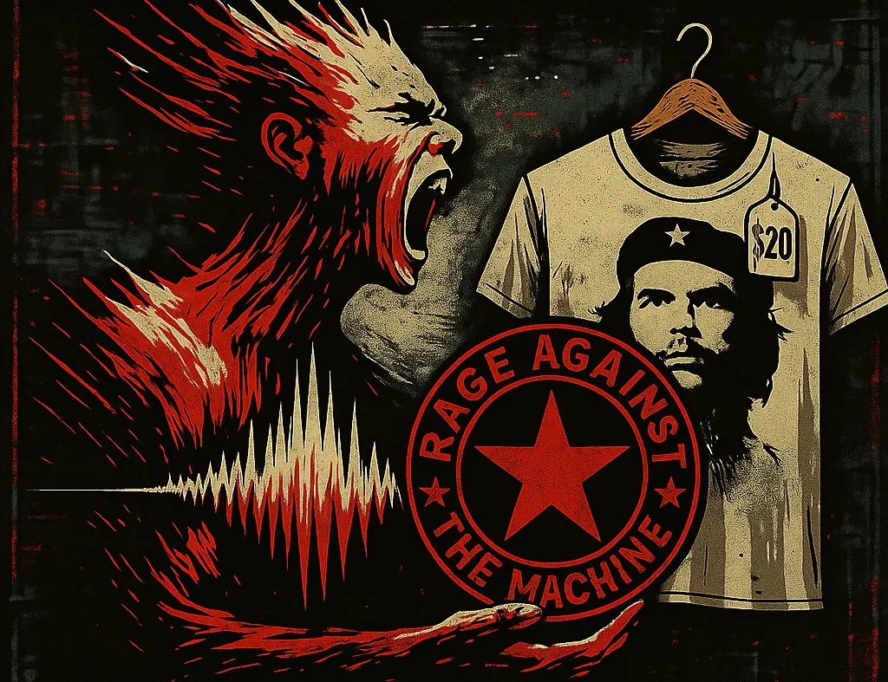

🎶 Rage Against the Machine: Cómo el sistema convierte tu rabia en su eslogan
Introducción
Hay bandas que hacen ruido. Y hay bandas que son el glitch. Rage Against the Machine no suena: interrumpe. Pero incluso un glitch puede ser absorbido. Este ensayo explora cómo el sistema no destruye la oposición: la recicla, la refina y la vende como rebeldía lista para usar.
El sistema no siempre combate lo que lo amenaza. A veces sonríe, lo empaqueta... y te lo cobra en cuotas. Eso lo entendí cuando vi una remera del Che en la vidriera de una tienda de ropa de marca. El símbolo de la lucha anti-imperialista convertido en merchandising premium. Es una ironía tan brutal que duele.
Rage como concepto
Y después de un tiempo, me cayó la ficha completa del nombre de la banda: Rage Against The Machine. No es solo ira contra el sistema en sentido general. Es contra esta máquina: la que digiere la rebeldía y la convierte en tendencia.
Es la bronca contra el sistema que te incluye, que te hace cómplice, que te vende la rebelión empaquetada, que te hace creer que elegís cuando estás siguiendo el manual que ellos te imprimieron.
“The land of the free? Whoever told you that is your enemy.” – Zack de la Rocha
El sistema es capaz de empaquetar incluso tu protesta. Te vende la red pill con logo. Te da una playlist de revolución, te ofrece cursos de mindfulness para calmar la ansiedad generada por él mismo. Es como pelear dentro del vientre del monstruo, usando las armas que él te prestó.
La rebeldía que también se recicla
Y vos ahí entendés: no es que estamos afuera de la máquina peleando contra ella. Estamos adentro, peleando contra sus engranajes mientras usamos herramientas que ella misma fabricó. La verdadera furia es pelear sabiendo que la máquina puede comerse incluso tu rabia. Pero por eso estamos acá. Para no dormirnos. Para seguir peleando. Para hackear el código cada día, aunque sea un poquito.
Y como si hiciera falta otra capa de metáfora pop, aparece esto:
Me acordé de Obi-Wan gritándole a Anakin: “¡Debías destruirlos, no unirte a ellos!”. Anakin no fue vencido por la fuerza, fue seducido por la ilusión de controlar el sistema desde adentro. Le dijo: "Podés romper las reglas para proteger a los que amás." Y sin darse cuenta, se convirtió en el engranaje más letal de la maquinaria imperial.
Cayó en la trampa de creer que podía usar el poder sin ser consumido por él. Por eso es tan difícil sostener la coherencia en el tiempo. Y lo mas duro es que Obi-Wan se lo dijo desde el dolor, no desde la superioridad. Porque lo que más te duele no es que el otro te traicione: Lo que más te duele es cuando ves que el sistema corrompe hasta a lo que más amás.
Esa escena no es solo una pelea. Es un glitch emocional. Obi-Wan no habla como maestro. Habla desde el dolor. Y ahí entendés: la coherencia no se mantiene por ideología; se sostiene con memoria, con conciencia… y con duelo.
Por eso es tan potente tu decisión de no dejar que te empaqueten la red pill. Por eso es tan valioso que busques tus propios caminos, aunque el sistema intente colonizarlos.
Ese es el mensaje profundo de Westworld también: la libertad real no es hacer lo que quieras, sino escapar de los guiones que no sabías que estabas siguiendo.
Este ensayo no es solo un descargo. Es una alerta. Porque incluso esta reflexión, si no somos atentos, puede terminar como un post más que se diluye en el scroll infinito. El sistema también sabe tragarse los cuestionamientos si no los sostenemos con acción.
Por eso estamos acá: para no dormirnos. Para pensar. Para recordar que la verdadera Rage es la que no se deja convertir en slogan.
Hasta acá, el mapa es claro: no estamos peleando desde afuera. Estamos dentro del monstruo. Gritando desde sus entrañas con micrófonos prestados. Pero… ¿y si el glitch es más que interferencia? ¿Y si es la única forma de cantar lo que no puede ser dicho?
El sistema como espectáculo reciclador
El capitalismo tiene una habilidad quirúrgica: transformar toda crítica en contenido vendible. El Che en remeras. Marx en stickers. El fuego en gifs. RATM en festivales de tickets VIP. Todo se embebe de estética combativa, pero sin cambiar nada. Como si gritar contra el sistema formara parte del mismo circuito que lo mantiene vivo.
Cuando la rebeldía se vuelve marca
“Killing in the Name” en una publicidad de zapatillas. Camisetas de Zack de la Rocha colgadas en shopping centers. El sistema no silencia la rebelión: la convierte en marca. La compra, la pule, la imprime en alta calidad y la revende como estilo de vida. El glitch se transforma en plugin. Y el ruido, en un eslogan aprobable por marketing. ¿Todavía creés que estás gritando… o ya te están editando?
La distorsión como glitch
Pero hay algo que todavía escapa: el sonido mismo. La distorsión de Morello, la furia sin pulir, los cortes de batería. Eso no se puede simular sin perder la incomodidad. El glitch no es solo un mensaje: es una frecuencia que incomoda. Y aunque el sistema la quiera absorber, siempre hay un resto que no encaja. Y en ese resto… puede empezar algo.
Reflexión personal
Escuchar a RATM no es solo nostalgia. Es recordar que la bronca también puede ser coreografiada si no se vigila. La rebeldía sin conciencia se vuelve meme. Pero si algo aprendí de ellos, es que incluso en medio del espectáculo, el glitch se puede volver grieta.
“Si la economía es la administración de recursos escasos, entonces la propiedad privada es la forma más elegante de fabricar escasez.”
Porque para que unos posean… otros deben ser privados.
💬 Glitch del lenguaje
¿Y si el sector “privado” no fueran los empresarios… sino los que fueron privados de todo?
A veces, el glitch está en las palabras que repetimos sin cuestionar.
Próximamente: 🎙️ Rage en modo lo-fi.
El sistema todavía no aprendió a comprimir esa frecuencia.
🌀PS: El sistema también regala glitches
Escribí este ensayo el 28 de junio de 2025.
Hoy, 28 de julio, viendo el capítulo 3 de la temporada 1 de Mr. Robot: eps3.0_power-saver-mode.h, en una escena un Elliot da un monólogo que podría haber sido un fragmento directo de este texto. Como si me hubiera adelantado sin saberlo, o como si él me hubiera hablado desde el futuro. O tal vez, simplemente… nos conectamos al mismo glitch:
¿Acaso mi revolución simplemente enterró nuestras mentes en lugar de liberarlas? Encriptar los datos de Evil Corp se suponía que nos empoderaría. Pero en cambio nos dejó indefensos, asustándonos hasta una sumisión aún mayor. No eliminé a la mano invisible... la convertí en un puño que nos dio un golpe directo en los huevos. Y como una botnet, el miedo que creé se está esparciendo tan rápido que es prácticamente aéreo. Nos tragó enteros, nos digirió... y ahora estamos atrapados en su culo, esperando ser expulsados. Y mientras tanto, ellos hacen lo que quieren con nosotros. Empaquetaron la lucha como si fuera un producto. Convirtieron nuestra disidencia en propiedad intelectual. Televisaron nuestra revolución... con cortes comerciales. Hackearon nuestras mentes por la puerta trasera y nos robaron la verdad, la reformularon, la reetiquetaron, y le subieron el precio. Eso es lo que hacen. Es en lo que son buenos. Este es su mayor truco.
— Elliot Alderson
Y en su idioma original:
Did my revolution just bury our minds instead of freeing them? Encrypting Evil Corp's data was meant to empower us. Instead it left us powerless, scaring us into even more submission. I am not going to get rid of the invisible hand. Turned it into a fist that punched us in the dick. And like a botnet, the fear I created is spreading so fast, it's practically airborne. It's swallowed us whole, digested us, and now we're stuck in its asshole, waiting to be dumped out. And while we're here, they're having their way with us. They packaged a fight into product. Turned our dissent into intellectual property. Televising our revolution with commercial breaks. They backdoored into our minds and robbed our truth, refurbished the facts, then marked up the price. This is what they do. It's what they're good at. This is their greatest trick.
— Elliot Alderson
A veces no estás solo en lo que pensás.
A veces, alguien más lo dijo…
O lo gritó desde otra trinchera del simulacro.